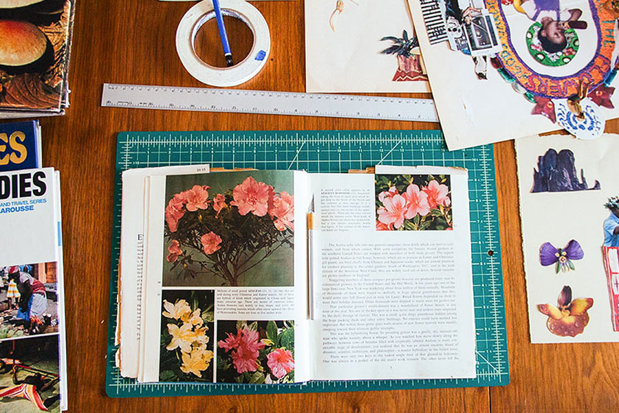
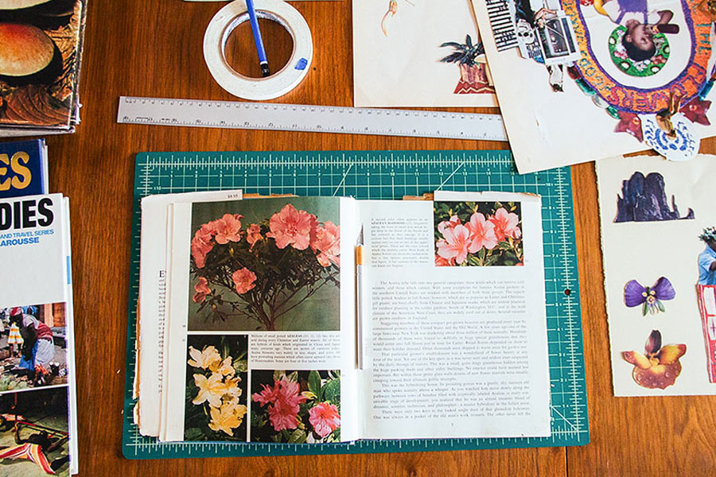

Denny himself saw the genre as “window dressing, a background” and thus it remains as so. The last great lauding of the Denny name came in 1976 with the inexplicable “this album is dedicated to Martin Denny” found on the liner notes of Throbbing Gristle’s benchmark industrial record, 20 Jazz Funk Greats. Having begun my Denny research quite recently for similar reasons Throbbing Gristle fans in the 70s sought him out, the invocation of his name was a head-scratching, who?
My primer to the Denny legacy is Ted Feighan, an exotica producer whose Monster Rally records have us all unwittingly absorbing the forefathers of the genre. Since discovering Monster Rally, I've written countless articles centered around the beatific visions the sound inspires. Cocktail parties in a mid-century lounge on Mars. Doing the Watusi in Bali. A hammock on a private beach. Even the simple act of walking around Oakland’s Lake Merritt. Having exchanged dozens of emails with Feighan, not once did it occur to ask, “what was the record that birthed the concept behind Monster Rally?” Not just the music, but the overall visual aesthetic, something Ted has become justly admired for. As it turns out, everything orbits around the father of exotica.
Denny, a classical pianist from New York, spent nearly five years in South America immersed in Latin rhythms as well as a stint in Los Angeles before moving to Hawaii where he formed his quartet. With the help of friends in the airline business, he’d collect exotic instruments; performing with his group at a tiki bar on a bandstand surrounded by a moat with live bullfrogs. Since it was a Mainland bar, we can surmise that a vacationing record producer, jazzed up on rum from a hollowed coconut stumbled into their bar one night, heard those bullfrogs vibing to the enchanting rhythms and became green with visions. Denny’s band would later get asked to recreate this in the studio, the bird squawks and bullfrogs included, despite their presence as an inside joke. Now, it’s 1959 and Denny’s got a number one record in Exotica and a number two single in “Quiet Village”.
Feighan bought his first Martin Denny record, a copy of “Quiet Village”, at a consignment store in Cleveland, OH called Thrift World—facts that exist like prerequisites to uncovering Denny’s history. This was a year before Feighan would purchase his first sampler and begin cultivating his identity as Monster Rally.
"I was buying a lot of cool looking records with the intention of sampling them,” Feighan said. “It has the perfect imagery... this girl in a jungle village. It’s an amazing record, but I was just buying this stuff for the cover image."
It was the late Aughts and Feighan had parted ways with his bandmates in the emo, Victory Records band Driver Side Impact. Having been floored by Panda Bear’s Person Pitch, Feighan began envisioning a beat-maker’s suite of his own. He obsessively collected exotica records based purely on the album artwork. At home he listened to his finds on a plastic Fisher-Price record player, an even cheaper version of the Crosby portables available at Urban Outfitters. The idea of Monster Rally gestated in his mind for a long lapse of time before eventually getting his paws on a SP-303 sampler, the same tool utilized by Panda Bear on Person Pitch, and on J Dilla’s Donuts—though he admits Donuts was a late discovery.
“At the beginning it was about weird, tropical hip-hop music, trying to make it sound like it’s old, but it never happened,” he said. “I think I was wrong about what I was actually making. Those first few releases are not hip-hop sounding at all. They don’t even have drums, but in my mind I’d listen to them and think yeah, man. I did it!’”
Early Monster Rally was loop heavy like Madlib's Beat Konducta series, but the mythical impetus is based on a record crate discovered in Tahiti. Feighan’s loops felt worn beyond their worth, like on “Champagne” from the Color Sky 7”. Is it pitch shifted to twang oddly or a loop lifted from a warped and weathered groove? The techniques strike as deliberate, the samples largely unaltered, and yet there’s a curious repetition employed in the early EPs (these would become the Coral LP). Every instrumental hits in that Madlibian vignette-style, but by forgoing the boom-bap break formula beneath the exotica, Monster Rally feels revelatory and therefore severed from the instrumentalist hip-hop that came before him, petering out as samples were vaccinated from the process.
Feighan didn’t break the mold, but he never wavered in his dedication to the genre. Instead, like Denny before him, he kept accumulating records so that the regional variations of the sound became a part of the Monster Rally universe. On the Sunflower EP, Feighan toyed with narrative thematics, constructing the collection entirely from Japanese jazz records, while 2013’s Return To Paradise stands as his magnum opus of textural bliss. It’s an album that glides beyond the techniques of his previous work with a master’s savvy; exotica revisited in an emperor’s new wardrobe. It’s an evolution Feighan refers to as a “musical deja vu.”
“It’s less about being tropical and more exotic, or just different; eerie or mysterious sounding, but in a way that’s familiar.”
On the b-side of his Singles Club release, Feighan speaks to the fact that Monster Rally began as an attempt to “make an album that sounded like something that existed 40 years ago, but actually never came out.” This out-of-time mentality would inspire his album art, as Feighan sought to camouflage his albums should they ever be categorized in the exotica section. Using techniques baring subtle resemblance to Agnes Montgomery’s collage work on Person Pitch, Feighan’s designs compliment the sample-based music by layering images that look cut from vintage stacks of National Geographic, sometimes even derived from albums the samples were lifted from.
 

“I couldn’t have one without the other,” he said of his music and visual output. “I started them at the same time. Initially, I would get one of these records and think how can I make music that sounds like this with a bunch of other elements… those records have such a look. Because of the grain of pictures, the way it’s printed, the color processing, it all looks like a collage.”
Working as Monster Rally is his utopian discovery, comparable to performing a lost musical translation of the map to El Dorado. But like all great sample-based artists, their work is a homage to their influencers, an attempt to converse with the past even if it’s a futile effort. Music is a conversation, often left unrequited in the ether. Martin Denny's "Quiet Village" is his staple, but it's a cover of a Les Baxter song written seven years prior. Denny's animal exotic bird calls made it a hit record, but it was homage nonetheless. In the book Mondo Exotica, Les Baxter is quoted: "People ask me, 'Where did it come from, did you go to Brazil? Cuba? Africa?' Back then I never got further than Glendale." He goes on to say it's like asking a jazz musician why he plays, "it's just in my nature to do weird stuff." That's it really, do something weird and hope the guy who inspired you to be weird gets your signal. For Denny and P-Orridge of Throbbing Gristle, it took 10 years for Denny to reply to the 20 Jazz Funk Greats liner note, and documentation fails as to any ongoing discussion between the two. Feighan would not discover Denny until around 2008, at least three years after his death. Likewise, Dilla was never able to trade SP-303 techniques with Panda Bear backstage at a Coachella lineup never to be, but their records are a conversation - two men who find it in their nature to do weird stuff. If Feighan could sit down with Denny to talk shop, he said he'd hope it be in a Los Angeles tiki bar.

Last month I happily packed up my job at a local school and committed to running Valley Cruise full time with Ted. It was the best decision I have ever made and has truly been a life-changing experience. Ted and I have known each other since we were children and there is no one I would rather run a business (and spend my life) with than him. It’s lucky we’re so close otherwise living and working together in our one-bedroom apartment could be tough!
Our typical day can vary so much with Valley Cruise that it can be hard to give a comprehensive understanding. For instance, next week Ted and I are driving out to Palm Springs to take pictures of some pins in our favorite landscape while also secluding ourselves in order to finally get a business plan together. This past weekend we were at the Long Beach Zine Fest selling books and getting to know other zinesters. Today I stayed home and worked on accounting, paying artists that have sold out and staying on top of the budget while Ted did some much needed updates to the website. Though everything looks seamless online, there is a lot of care behind every single post, picture and update. That’s how we make it look so easy.
Since I came onboard things at Valley Cruise have certainly been more organized and (maybe too many) weekly meetings have been implemented. Typically we meet on Mondays to discuss our goals and plans for the week. I write them all on a whiteboard that we keep in our living room, constantly reminding ourselves of everything we have to do. On Wednesdays we try to take at least a half hour to discuss our marketing for the week, what upcoming releases are on-deck and how can we best promote each one. On Friday, we meet to wrap-up the week and decide on what should be done over the weekend. We have really found that the key to success is good organization. Without a discussion, list and calendar there’s no way we would be able to promote all of our projects while still coming up with new ideas and keeping on top of the daily tasks that need to be done. It may seem like a drag, but meeting and calendaring has made a world of difference in our productivity.
One of my favorite aspects of Valley Cruise is the opportunity Ted and I have to work with some amazing artists. Through Valley Cruise, we have really found our place in the Los Angeles community, allowing us to meet with artists and illustrators we may have never seen before. It’s particularly exciting when we are able to see our favorite artists in person. A few weeks ago we went to Tina Lugo’s opening at Mishka in Los Angeles and were blown away by seeing her art up close.
Artist submissions are something we encourage and love at Valley Cruise. For example, for our latest collaboration, Killer Acid reached out to us. Ted had been a big fan for a long time and we were both thrilled that he thought of Valley Cruise as a mode for displaying his work. Matt Gondek of Struggles 3D also contacted us and we instantly fell in love. I mean, how could you not like the Simpsons head explosions in 3D. The idea was genius!
Finally, I have to give a shout out to all our friends and family that have helped us along the way. We have been incredibly lucky to have a wonderful group of people always willing to pitch in. We are so grateful for their support and know that we wouldn’t be able to do this without them. Check out some of the pictures of everyone in action!
Singles Club is a subscription record club and digital music journal published quarterly. This single contains an exclusive A-Side recording from the artist along with an interview on the B-Side featuring the artist's description of the project and track.
Grab THIS issue right now or subscribe for a year of singles + extra perks.